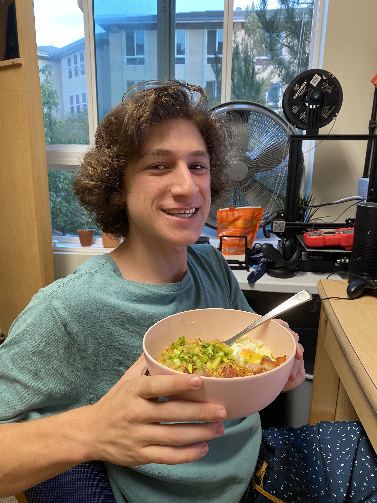

About the Chef

As a bunch of college students, I think a lot of us are still getting used to cooking for ourselves and probably need a little inspiration.
This site is intended to give you that inspiration while being affordable, simple, and quick.
Because as Chef Guesteau says, "Anyone can cook!"
My Life and Cooking
For several years now, I have been an avid baker. I make cakes, cookies, pies, and whatever striked my interest. Moving out into an apartment with my own kitchen, I am determined to learn to cook relatively well. Well, at least good enough to function on a healthy diet.
Fun Fact
In making this site, rather than snagging some photos off of the internet, I decided to use pictures from my own creations! The crepes were made earlier in the quarter, but the other three recipes where for this website (much to the pleasure of my roommates).
- 